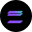

Status · semantic pill
Confirmed
Pending 2 / 3 signers
Failed · nonce too low
Queued
Proposal
Chains · icon-only, 24px
stacked
+4
Addresses · click to copy
0x5b0f…4e0A
henry.lore.eth
0xcaf3…9d1c
Positions · one chip, any claim
Tokens
USDC USD Coin 8,420.12 ETH Ethereum 0.842 WBTC Wrapped BTC 0.012 
SOL Solana 6.2 DAI MakerDAO 1,020.00
Yield
USDC · Aave v3 supply · Ethereum 5.24% APY USDC · Morpho Base 6.81% APY stETH Lido · staked 3.12% APY
Perps
ETH-PERP Hyperliquid Long 5× SOL-PERP dYdX Short 2× USDC / ETH 0.05% Uni v3 · Arbitrum 12.4% APR
Markets
Fed cuts in June? Polymarket Yes @ ¢64 BTC > $120k EOY Kalshi No @ ¢38
NFT · Fund
Azuki #4821 floor 6.2 ETH North Star ETF Squad · 12 members 4.8% Ondo USDY closed-end · T-bills 5.15%
Lore-lead variants · small logo riffs in the mark slot
Six slight variations on the canonical mark, all legal in product. Useful when a chip wants to read “this is Lore-native” — vault chips, rewards, account labels. Tokenized so ground color shifts per theme.
Lore primary · round
Squad vault squircle · app-icon
Rewards ink · reverse
Linked account outline · 3rd-party
Savings pot ring · secondary
Core · serif upright · formal
Sizes · sm / md / lg
USDC
8,420 8,420.12 USDC USD Coin · Base 8,420.12